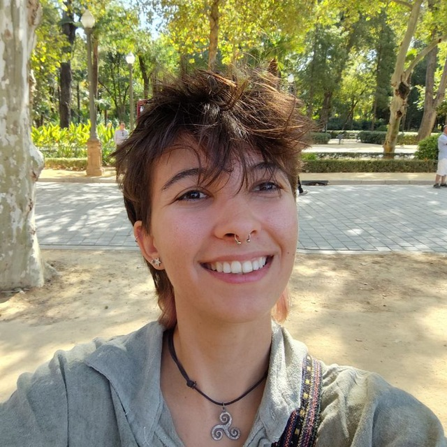

Hi, I'm Alba!
Computer Engineer committed to leveraging Artificial Intelligence for biodiversity conservation.
About me
I am a Computer Engineer from the University of Huelva with a Master's degree in Computational Intelligence and IoT from the University of Córdoba. Combining my passion for computer science with deep environmental awareness, I focus on the intersection of technology and ecology.
I am currently a PhD Candidate at the University of Cádiz, where I focus my thesis on applying artificial intelligence to the analysis of ecological data collected from remote sensors for biodiversity monitoring.
My work sits at the intersection of computer science and environmental conservation. I specialize in developing AI-driven tools for automating the processing of ecological datasets—acoustic recordings, camera trap images, underwater audio, and other remote sensing technologies—to support efficient, scalable, and reliable wildlife monitoring.
Research Focus
My work centers on applying artificial intelligence to ecological monitoring, with a strong emphasis on ecoacoustics and multisensor data. I design automated pipelines that support scalable biodiversity assessment and help researchers extract meaningful patterns from large datasets.
Multisensor AI
Detection, classification, analysis and integration of audio, video, and radar data for automated ecological monitoring.
Automated pipelines
End-to-end workflows for remote sensing data: preprocessing, model training, validation, and scalable deployment.
Conservation Technology
Tools that support biodiversity monitoring, reduce expert workload, and promote open and reproducible research.
Current work
SEANIMALMOVE Project
University of Cádiz
Developing deep learning models for automated analysis of avian recordings and underwater acoustic soundscapes, supporting research on seabirds and cetaceans in the Strait of Gibraltar and Bay of Cádiz.
BIRDeep Project
Estación Biológica de Doñana (CSIC)
Designed a bird song detection pipeline that significantly reduced false positives in large-scale passive acoustic monitoring, contributing to a high-impact publication in Ecological Informatics.
AI-Census Project
University of Huelva
Implemented hierarchical deep learning models for species detection and classification in camera trap images from Doñana National Park, supporting automated wildlife censusing.
Upcoming events
No upcoming events at the moment.